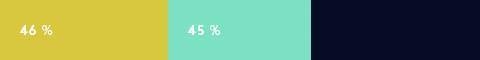

Scroll up to see the 7 best qualities - or the 7 qualities that will bring you to heaven.
THE 7 PATHS TO HEAVEN AND HELL
What are the 7 deadly sins of modern society? The Swedish people has ranked the 7 best and 7 worst qualities a human being can have.
Scroll down to see the 7 worst qualities - or the 7 new deadly sins.